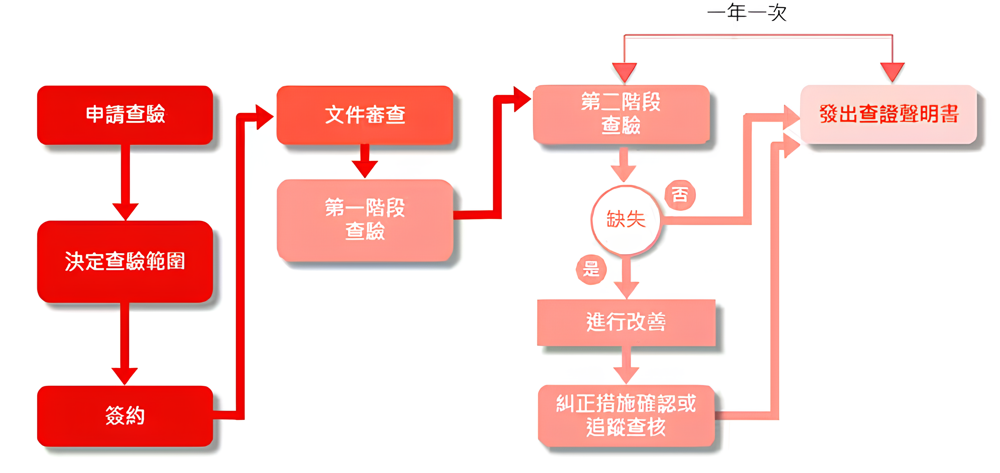

- 找出節省能源與改善方式的可能性
- 讓您更瞭解不同部門、職務和工業程序間的互動方式
- 提供數種方式，幫助您有效將對環境的不利衝擊降至最低
- 提升公司的正面形象
- 增加投資者的獲利
- 提供金融市場和保險公司可靠的資訊
- 溫室氣體查證需要下列7個步驟： 
- 開始查驗流程，企業或組織提出查驗申請。
- 根據申請，確定需要查驗的範圍和具體內容。
- 企業與查驗機構簽訂查驗合約，正式開始查驗工作。
- 查驗機構對企業提交的相關文件進行審查，檢查文件的完整性和準確性。
- 初步現場查驗，評估企業的溫室氣體排放現狀，確認文件和實際情況的一致性。
- 深入查驗，針對第一階段查驗中發現的問題進行更詳細的檢查，確認是否存在缺失。
- 如果第二階段查驗中沒有缺失，則發出查證聲明書。如果有缺失，企業需進行改進，並在必要時進行追跡查核，確認改進措施的落實。
ISO 14064究竟是什麼?
ISO 14064 是一個國際標準，為溫室氣體排放和減少提供了一套明確的指南。該標準分為三個部分，涵蓋了組織級和項目級的排放量核算與報告，以及第三方審核要求。ISO 14064 旨在幫助組織準確衡量和管理其溫室氣體排放，提升環境管理能力，並促進全球應對氣候變化的努力。通過遵循 ISO 14064，組織可以提高透明度和可信度，並展示其對可持續發展的承諾。